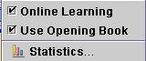
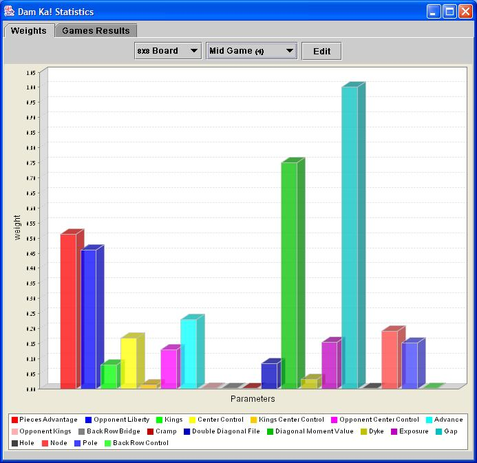
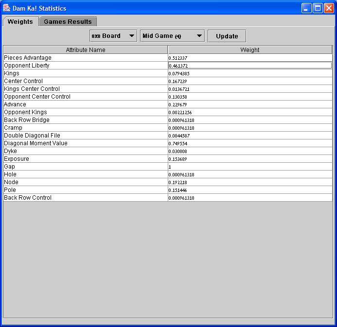
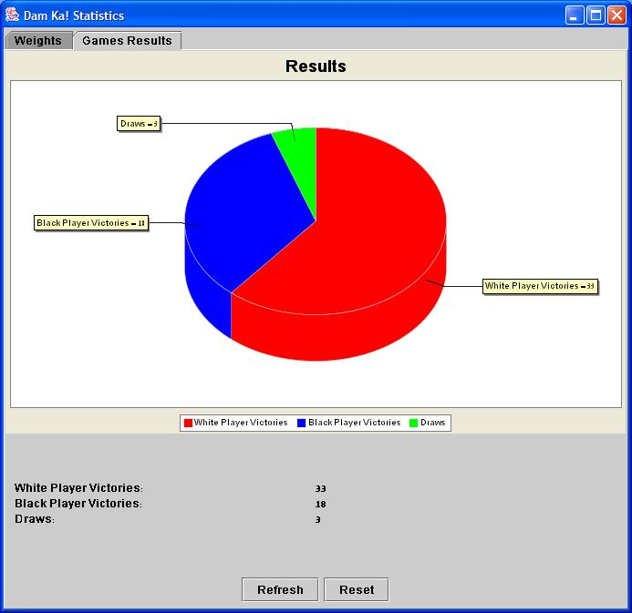

|
Back to Help Contents
The Learning Menu

The following options are available from the Learning menu:
- Online Learning. Toggles the "Online Learning" mode. When "Online Learning" is enabled, the machine player updates the learned weights during the game.
- Use Opening Book. Toggles the "Opening Book" usage. When this option is enables, the machine player may use some moves from its "opening book".
- Statistics. Opens the statistics frame.
The Statistics frame is composed of two sections:
- Weights.
Provides a view of the learned weights, and allows manual weights editing.


There are different weight sets for the different board sizes, and for the in-game stages.
- Results.
Shows the results of the played games.

Back to Help Contents
|